North India Places
Amritsar Tourism -- Gateway to Punjab- home to Golden Temple
Home of the glorious Golden Temple, the iconic city of Amritsar, portrays the
heroic character of the Punjab. A day in this peaceful city starts with the spiritual prayers from Gurudwaras. The original name of rst the ancient lake, then of the
temple complex, and later the surrounding city, meaning "pool of ambrosial nectar."
Amritsar is the spiritual and cultural centre of the Sikh Religion. Baisakhi festival brings out Amritsar's resplendent face with its nest food, clothes and merrymaking. This place is also famous for its Jallianwala Bagh massacre and its proximity to Wagah Border. The satiating food and generous dollops of legendary
Punjabi hospitality further connive to cast a spell upon the visitor. From the Operation Blue Star in the Golden Temple to the tragedy of the Jallianwala Bagh
massacre, Amritsar has seen the worst of situations and yet emerged like a phoenix through testing times. Amritsar today is a thriving city with active trade and
tourism industries. One of the most agriculturally productive cities of India, Amritsar is well connected with most of the important cities of India
Thinks To Do
Golden Temple

JallianWala Bagh

Wagah Border
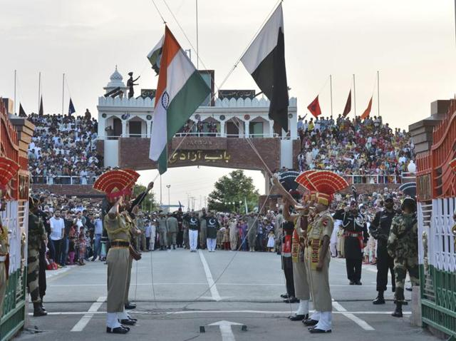
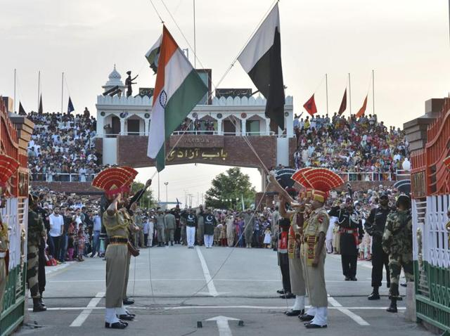
Guru Ke Mahal
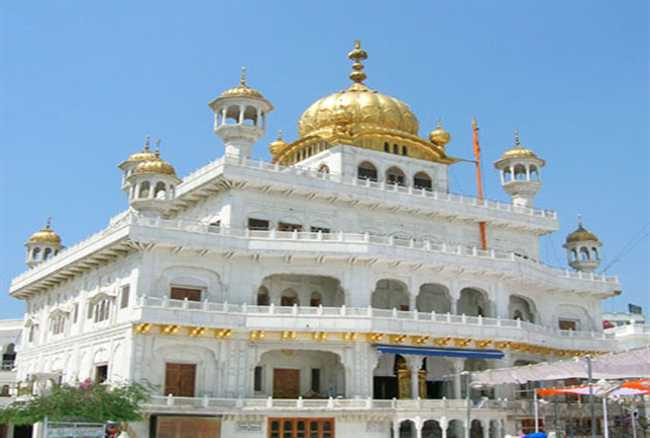
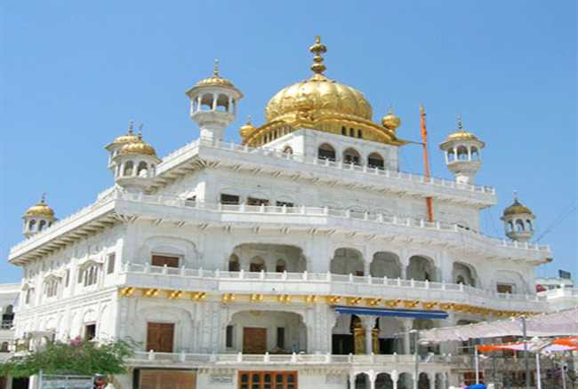
History
Amritsar, derives its name from Amrit Sarovar which was built by Guru Ram Das in the village of Tung. Guru Ram Das believed that the waters of the lake had healing powers. The land was bought by him for a small amount of 700 rupees, and a temple complex was built around it. Gradually, the village developed and came to be known as Chakk Ram Das which nally became Amritsar that translates to pool of nectar.
Religious Places in Amritsar
Amritsar is a very important religious centre for Hindus and Sikhs. The many temples and Gurudwaras include Gurdwara Manji Sahib, Akal Takht, Shivala Bhaian Temple, Gurdwara Bebaaksar Sahib, Gurdwara Bir Baba Budha, Tala Sahib Gurudwara and the Gopal mandir.
Jalianwala Bagh Massacre
One of the most tragic incidents in Colonial India occurred at the Jalianwala Bagh on 13th April 1919. Farmers from various villages had gathered here, unaware of a new law that banned meetings among locals. Suspecting a protest, the British ocials under Colonel Reginald Dyer opened re in the area and created a havoc situations. Many were killed by the bullets, many in the stampede and many others jumped into a nearby well in an attempt to save themselves. The death toll is believed to be 379. The pace still has bullet marks and blood stains in and around the well.
Amritsar, derives its name from Amrit Sarovar which was built by Guru Ram Das in the village of Tung. Guru Ram Das believed that the waters of the lake had healing powers. The land was bought by him for a small amount of 700 rupees, and a temple complex was built around it. Gradually, the village developed and came to be known as Chakk Ram Das which nally became Amritsar that translates to pool of nectar.
Religious Places in Amritsar
Amritsar is a very important religious centre for Hindus and Sikhs. The many temples and Gurudwaras include Gurdwara Manji Sahib, Akal Takht, Shivala Bhaian Temple, Gurdwara Bebaaksar Sahib, Gurdwara Bir Baba Budha, Tala Sahib Gurudwara and the Gopal mandir.
Jalianwala Bagh Massacre
One of the most tragic incidents in Colonial India occurred at the Jalianwala Bagh on 13th April 1919. Farmers from various villages had gathered here, unaware of a new law that banned meetings among locals. Suspecting a protest, the British ocials under Colonel Reginald Dyer opened re in the area and created a havoc situations. Many were killed by the bullets, many in the stampede and many others jumped into a nearby well in an attempt to save themselves. The death toll is believed to be 379. The pace still has bullet marks and blood stains in and around the well.
Amritsar Tourism -- Gateway to Punjab- home to Golden Temple
Home of the glorious Golden Temple, the iconic city of Amritsar, portrays the
heroic character of the Punjab. A day in this peaceful city starts with the spiritual prayers from Gurudwaras. The original name of rst the ancient lake, then of the
temple complex, and later the surrounding city, meaning "pool of ambrosial nectar."
Amritsar is the spiritual and cultural centre of the Sikh Religion. Baisakhi festival brings out Amritsar's resplendent face with its nest food, clothes and merrymaking. This place is also famous for its Jallianwala Bagh massacre and its proximity to Wagah Border. The satiating food and generous dollops of legendary
Punjabi hospitality further connive to cast a spell upon the visitor. From the Operation Blue Star in the Golden Temple to the tragedy of the Jallianwala Bagh
massacre, Amritsar has seen the worst of situations and yet emerged like a phoenix through testing times. Amritsar today is a thriving city with active trade and
tourism industries. One of the most agriculturally productive cities of India, Amritsar is well connected with most of the important cities of India
Thinks To Do
Golden Temple
JallianWala Bagh
Wagah Border
Guru Ke Mahal
History
Amritsar, derives its name from Amrit Sarovar which was built by Guru Ram Das in the village of Tung. Guru Ram Das believed that the waters of the lake had healing powers. The land was bought by him for a small amount of 700 rupees, and a temple complex was built around it. Gradually, the village developed and came to be known as Chakk Ram Das which nally became Amritsar that translates to pool of nectar.
Religious Places in Amritsar
Amritsar is a very important religious centre for Hindus and Sikhs. The many temples and Gurudwaras include Gurdwara Manji Sahib, Akal Takht, Shivala Bhaian Temple, Gurdwara Bebaaksar Sahib, Gurdwara Bir Baba Budha, Tala Sahib Gurudwara and the Gopal mandir.
Jalianwala Bagh Massacre
One of the most tragic incidents in Colonial India occurred at the Jalianwala Bagh on 13th April 1919. Farmers from various villages had gathered here, unaware of a new law that banned meetings among locals. Suspecting a protest, the British ocials under Colonel Reginald Dyer opened re in the area and created a havoc situations. Many were killed by the bullets, many in the stampede and many others jumped into a nearby well in an attempt to save themselves. The death toll is believed to be 379. The pace still has bullet marks and blood stains in and around the well.
Amritsar, derives its name from Amrit Sarovar which was built by Guru Ram Das in the village of Tung. Guru Ram Das believed that the waters of the lake had healing powers. The land was bought by him for a small amount of 700 rupees, and a temple complex was built around it. Gradually, the village developed and came to be known as Chakk Ram Das which nally became Amritsar that translates to pool of nectar.
Religious Places in Amritsar
Amritsar is a very important religious centre for Hindus and Sikhs. The many temples and Gurudwaras include Gurdwara Manji Sahib, Akal Takht, Shivala Bhaian Temple, Gurdwara Bebaaksar Sahib, Gurdwara Bir Baba Budha, Tala Sahib Gurudwara and the Gopal mandir.
Jalianwala Bagh Massacre
One of the most tragic incidents in Colonial India occurred at the Jalianwala Bagh on 13th April 1919. Farmers from various villages had gathered here, unaware of a new law that banned meetings among locals. Suspecting a protest, the British ocials under Colonel Reginald Dyer opened re in the area and created a havoc situations. Many were killed by the bullets, many in the stampede and many others jumped into a nearby well in an attempt to save themselves. The death toll is believed to be 379. The pace still has bullet marks and blood stains in and around the well.
New Delhi Tourism -- "The city ofcities"
From historical monuments to crowded shopping malls, from Mughal gardens to Delhi University campus, the capital city has multiple personalities making it 'The
good, the bad and the ugly'.
The Capital city of India and the base location to explore North India, Delhi is considered to be the city with a heart.
New Delhi is a vivid blend of traditions, cultural diversity, political importance as well as architectural brilliance. It bridges its historical glory with the current
modern era. It is a popular tourist spot and also houses multiple theatres and centres of performing arts. Delhi's architectural brilliance can be traced as back
as 4th century AD when the Iron Pillar was built in the Mehrauli area, which hasn't shown any sign of rusting yet. The Qutub Minar, India Gate, Rashtrapati Bhawan ,Delhi has numerous monuments
showcasing both architectural and historical magnicence. ISKCON Temple, Akshardham Temple and the Lotus temple
are some other beautiful buildings here. However, Delhi's magic lies in the Chandni
Chowk area near the Jama Masjid with the old bazaars bustling and chirping with thousands of visitors haggling with vendors to buy things at the cheapest rate
possible. Delhi's food is equally important to describe why people keep coming back to this wonderful city. From 5 star hotels and restaurants to the Parathe
Wali Gali, Delhi has an amazing food culture and if you are not used to Indian street food, you might also get to suer from Delhi Belly, but it might be just
worth it.
Thinks To Do
Red Fort

Qutab Minar

India Gate

National Zoological Park
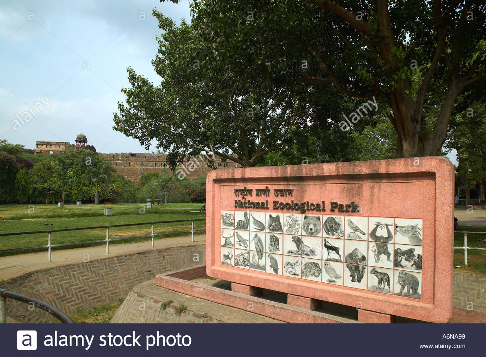
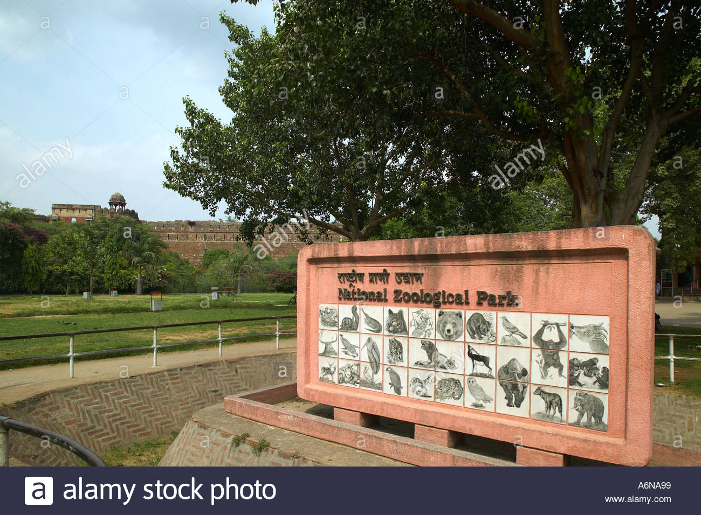
New Delhi - The City with a Heart
Often referred to as "Diwali Dilli", Delhi is the city with a heart that beats for everyone - whether you live in Delhi or are visiting. The population here is a hybrid of various cultures and religions and each of them exists harmoniously with the other. All festivals are celebrated in Delhi with great pomp and piety. Students from dierent parts of the world come to study at the prestigious Delhi University. The nightlife in Delhi is also very exciting.
Nightlife in Delhi
The nightlife of Delhi is thrilling and pulsating and among the best in the country. There are endless options for partying, chilling, dining, dancing and simply enjoying. There are numerous places in Delhi with feet-tapping music and awesome ambience. During the week, lounge and dance bars see the maximum crowd while on the weekend the clubs really take o. Some of the best places to explore in Delhi are Kitty Su, F Bar & Lounge, Lap, Lights Camera Action, Fork You, and Hauz Khas Social. These are just some of the popular places among the multitude of options that Delhi has to oer. The craft beer craze is also surfacing up really fast in Delhi. More and more thirsty brew seekers are heading to chic beer cafes serving lagers. Some of the most famous and best breweries in Delhi are The Beer Cafe, The Pint Room, Vapour, Striker Pub, Manhattan Craft Brewery and Soi 7. Delhi is known for one of the best party cultures in India besides Mumbai and Bangalore, and rightly so!
Often referred to as "Diwali Dilli", Delhi is the city with a heart that beats for everyone - whether you live in Delhi or are visiting. The population here is a hybrid of various cultures and religions and each of them exists harmoniously with the other. All festivals are celebrated in Delhi with great pomp and piety. Students from dierent parts of the world come to study at the prestigious Delhi University. The nightlife in Delhi is also very exciting.
Nightlife in Delhi
The nightlife of Delhi is thrilling and pulsating and among the best in the country. There are endless options for partying, chilling, dining, dancing and simply enjoying. There are numerous places in Delhi with feet-tapping music and awesome ambience. During the week, lounge and dance bars see the maximum crowd while on the weekend the clubs really take o. Some of the best places to explore in Delhi are Kitty Su, F Bar & Lounge, Lap, Lights Camera Action, Fork You, and Hauz Khas Social. These are just some of the popular places among the multitude of options that Delhi has to oer. The craft beer craze is also surfacing up really fast in Delhi. More and more thirsty brew seekers are heading to chic beer cafes serving lagers. Some of the most famous and best breweries in Delhi are The Beer Cafe, The Pint Room, Vapour, Striker Pub, Manhattan Craft Brewery and Soi 7. Delhi is known for one of the best party cultures in India besides Mumbai and Bangalore, and rightly so!
Jaipur Tourism -- "The PinkCity"
The 'Pink City' of India, Jaipur is a palatial wonderland with its unparalleled beauty, spectacular architecture and vibrant, regal history. With a superb collection of
breathtaking palaces, exciting camel/elephant rides, vibrant Rajasthani culture and scrumptious ethnic food, Jaipur is a time travel portal to the old time worldly
charms of the Rajahs and their lavish lifestyles, giving Jaipur a unique regal vibe in the contemporary 21st century India.
Literally translated into the City of Victory, Jaipur has always been one of the faces of tourism in India. Popularly clubbed with Agra
and New Delhi, they form the Golden Triangle of Indian Tourism and would be the most popular tour for any foreigner
visiting India. Jaipur is a beautiful city with dierent shades to it. The Amer region of Jaipur is decorated with beautiful hills and lakes and studded with
magnicent forts including Amber Palace, Nahargarh, and Jaigarh Forts. There is the old walled city, which is a dierent city altogether with narrow lanes, pink
shops and buildings and monuments like Hawa Mahal , City Palace and the famous Jantar Mantar. These lanes are also the same which attracts tourists from all over the world for its sweets, snacks and the shopping arena it
provides. From colourful bangles to printed Saris to the ornaments and jewellery of Johri Bazaar, Jaipur has everything to oer for a shopaholic. There are some
posh residential areas with high-rises and yovers and amazing infrastructure. Jaipur has a unique feel to it and it can only be experienced once you are there
worth it.
Thinks To Do
Hawa Mahal

City Palace
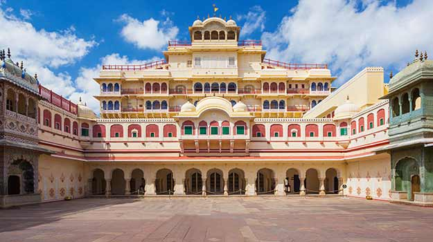
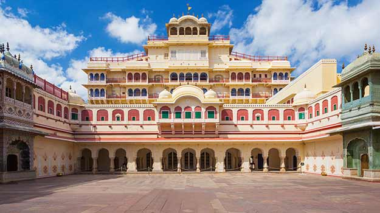
Jantar Mantar
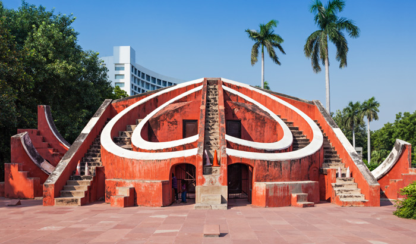
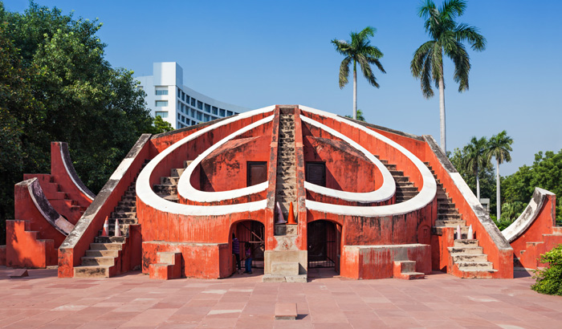
Nahargarh Fort

History Of Jaipur
The history of Jaipur is immersed in the quest of making it the most protected and powerful capital of its time. The city itself is named after the king who founded it in 1727, Maharaja Jai Singh II; he decided to shift his state?s capital city from Amber to present-day Jaipur due to scarce basic amenities and consistently growing population. He wanted his new capital to be so scientically, culturally, and architecturally accurate that the science and mathematics acionado took help from a Bengali Brahmin scholar Vidyadhar Bhattacharya to construct a Vastu Shastra compliant city over the course of four years. The most advanced and fortied layout of the city was made, with two out of the nine blocks reserved for palaces and administrative buildings and the rest for the public. The reason behind Jaipur being called ?The Pink City? is also an interesting one: The whole city was quite literally dipped in pink paint to welcome the Prince of Wales in 1856 and to continue its otherworldly magical charm, the pink colour is still maintained to this day. Jaipur is, in fact, India?s rst ever planned city, and is therefore rightly translated as the ?City of Victory?.
Nightlife In Jaipur
s stately, sophisticated and regal Jaipur looks at day, it takes up a whole new avatar at night! The nightlife of Jaipur may not be like Goa?s, but it is nonetheless adventurous and fun. If drinking and lounging with friends accompanied by great food and music are your sense of nirvana, then bars and pubs such as Aza, The Grunge Lounge Bar, Bar Palladio, are your stairways to heaven. If you need to blow o some steam by dancing your heart out on the dancing oor, then Jaipur nightlife has got you covered. Blackout, The Dragon Club (T.D.C), The Extreme Discotheque are perfect places to let your wild side show, costing you an approximate average of INR 1500 for two, an aordable price for the amazing vibe they have got to offer!
The history of Jaipur is immersed in the quest of making it the most protected and powerful capital of its time. The city itself is named after the king who founded it in 1727, Maharaja Jai Singh II; he decided to shift his state?s capital city from Amber to present-day Jaipur due to scarce basic amenities and consistently growing population. He wanted his new capital to be so scientically, culturally, and architecturally accurate that the science and mathematics acionado took help from a Bengali Brahmin scholar Vidyadhar Bhattacharya to construct a Vastu Shastra compliant city over the course of four years. The most advanced and fortied layout of the city was made, with two out of the nine blocks reserved for palaces and administrative buildings and the rest for the public. The reason behind Jaipur being called ?The Pink City? is also an interesting one: The whole city was quite literally dipped in pink paint to welcome the Prince of Wales in 1856 and to continue its otherworldly magical charm, the pink colour is still maintained to this day. Jaipur is, in fact, India?s rst ever planned city, and is therefore rightly translated as the ?City of Victory?.
Nightlife In Jaipur
s stately, sophisticated and regal Jaipur looks at day, it takes up a whole new avatar at night! The nightlife of Jaipur may not be like Goa?s, but it is nonetheless adventurous and fun. If drinking and lounging with friends accompanied by great food and music are your sense of nirvana, then bars and pubs such as Aza, The Grunge Lounge Bar, Bar Palladio, are your stairways to heaven. If you need to blow o some steam by dancing your heart out on the dancing oor, then Jaipur nightlife has got you covered. Blackout, The Dragon Club (T.D.C), The Extreme Discotheque are perfect places to let your wild side show, costing you an approximate average of INR 1500 for two, an aordable price for the amazing vibe they have got to offer!
Leh-Ladakh India Tourism -- "India's Own Moonland"
A land like no other with superabundance of attractions to visit and phantasmagoric and fabulous landscapes, amazing people and culture, Ladakh is truly a
heaven on Earth.
Bounded by two of the world's mightiest mountain ranges, the Great Himalaya and the Karakoram, it lies athwart two other, the Ladakh range and the Zanskar
range. Ladakh is mystical in all the spheres it covers, from nature, geography, sceneries to the modest cultures that it fosters. Right from gompas to the
sensational momos, the superabundance of attractions to visit makes this city make it heaven on earth. It is said that only in Ladakh can a man sitting in the
sun with his feet in the shade suer from sunstroke and frostbite at the same time.
For those of us living in the constant confusion about the dierence between these twin locations, Leh-Ladakh, here is something that might help you. The state
of Jammu and Kashmir is divided into three parts: Jammu, Kashmir, and Ladakh. Ladakh, further is divided into two districts: district Leh, and district Kargil. The
former district has a popular town ?Leh?and is a great tourist attraction because of its beautiful monasteries, picturesque locations, and interesting markets
dening the culture of the place.
Thinks To Do
Pangong Lake
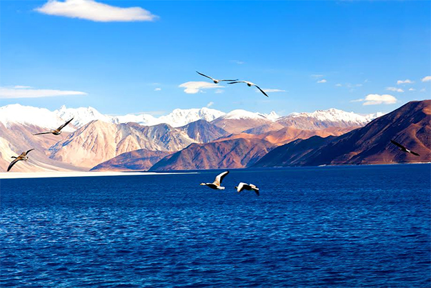
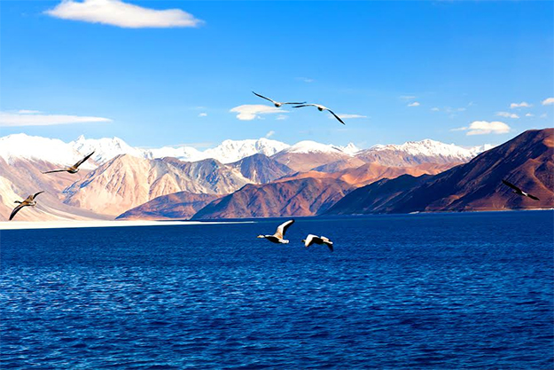
Shanti Stupa

Leh Palace

Magnetic Hill
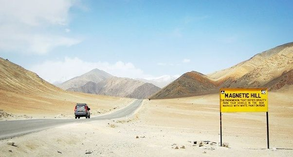
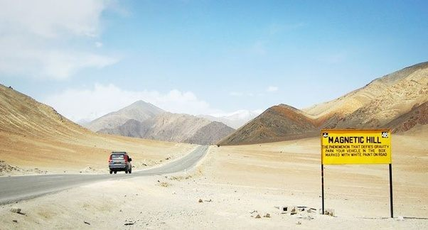
The perfect getaway for an adventure ride!
For someone who thrives on adventure and lives his life on the edge, Ladakh is their Mecca. There's nothing more satisfying than traversing such high peaks with nothing but daunting yet majestic snow clad mountains in the backdrop. Every minute you spend here becomes a memory. From bike riders to cycling enthusiasts, this is the place to test your endurance and skill. For those who aren't afraid of the water, do not miss the river rafting in Zanskar river at the conuence of Indus and Zanskar. The price per person is around INR 1000 for the long-distance rafting. This is an absolutely unforgettable experience for people who seek thrills. The largest city in this region is Leh and although this city has many monasteries, visit nearby cities like Nubra Valley, Pulu for magnicent views of the scenic beauty. Visit one of the highest motorable roads in the world- Khardung La while on your journey to the Nubra Valley.
Innerline Permits
Permits are required (also for Indian Nationals) to travel the inner line areas of Nubra Valley, the Durbuk Block, Khardung La, Dha-hanu, Tso-Moriri and Tsokar Lakes and Pangong Lake. These are available in the Leh town and you are advised to get them from trusted travel agents. Take the photocopies of the Protected Area Permit (PAP) or Restricted Area Permit (RAP) with you wherever you go in Ladakh. Government authorities have launched a web portal http://lahdclehpermit.in/ on June 1, 2017, making it easier for the travellers to obtain a permit. A fee of INR 400 + INR 20 per day as an Inner line fee is applicable. Note: There is no online payment option on this portal. Take the printout of the permit and visit TIC Oce, Opposite J&K Bank, Main Market, Leh. You can get permit signed and stamped there. The timings of the oce are 9.00 AM to 03:00 PM.
For someone who thrives on adventure and lives his life on the edge, Ladakh is their Mecca. There's nothing more satisfying than traversing such high peaks with nothing but daunting yet majestic snow clad mountains in the backdrop. Every minute you spend here becomes a memory. From bike riders to cycling enthusiasts, this is the place to test your endurance and skill. For those who aren't afraid of the water, do not miss the river rafting in Zanskar river at the conuence of Indus and Zanskar. The price per person is around INR 1000 for the long-distance rafting. This is an absolutely unforgettable experience for people who seek thrills. The largest city in this region is Leh and although this city has many monasteries, visit nearby cities like Nubra Valley, Pulu for magnicent views of the scenic beauty. Visit one of the highest motorable roads in the world- Khardung La while on your journey to the Nubra Valley.
Innerline Permits
Permits are required (also for Indian Nationals) to travel the inner line areas of Nubra Valley, the Durbuk Block, Khardung La, Dha-hanu, Tso-Moriri and Tsokar Lakes and Pangong Lake. These are available in the Leh town and you are advised to get them from trusted travel agents. Take the photocopies of the Protected Area Permit (PAP) or Restricted Area Permit (RAP) with you wherever you go in Ladakh. Government authorities have launched a web portal http://lahdclehpermit.in/ on June 1, 2017, making it easier for the travellers to obtain a permit. A fee of INR 400 + INR 20 per day as an Inner line fee is applicable. Note: There is no online payment option on this portal. Take the printout of the permit and visit TIC Oce, Opposite J&K Bank, Main Market, Leh. You can get permit signed and stamped there. The timings of the oce are 9.00 AM to 03:00 PM.
Manali Tourism -- "Lover's Paradise - India's Honeymoon capital"
Situated at a height of 6260 feet above sea level, Manali is one of the most popular, beautiful and awe-inspiring hill stations in this country. A valley located in the
Kullu district of Himachal Pradesh, Manali overwhelms its visitors by owering apple trees and adventurous snow covered roads.
Surrounded by majestic hills and woody forests, the quaint charm of Manali has captured the world's attention and has become one of the most visited tourist
destinations in India. The pristine River Beas ows right through the town, creating a mesmerising and spellbinding landscape. Nestled at one end of the KulluValley, Manali is a popular hill station with attractions such as the Rohtang Pass
and Solang Valley nearby. Rohtang Pass is covered with snow throughout the year and is a good experience in itself. This is the ideal place for tourists
looking to unwind and rejuvenate in the lap of nature, for there is no place in the country more vibrant and charming as Manali.
Thinks To Do
Solang Valley
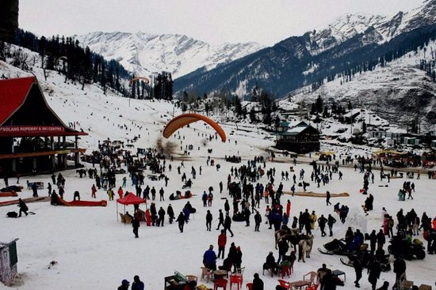
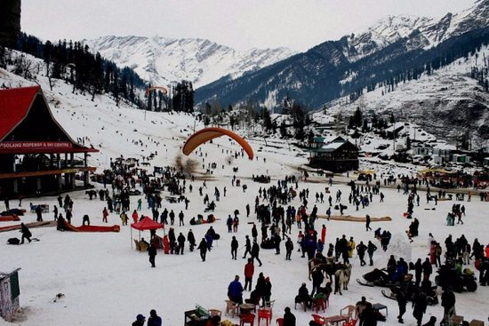
Rohtang Pass
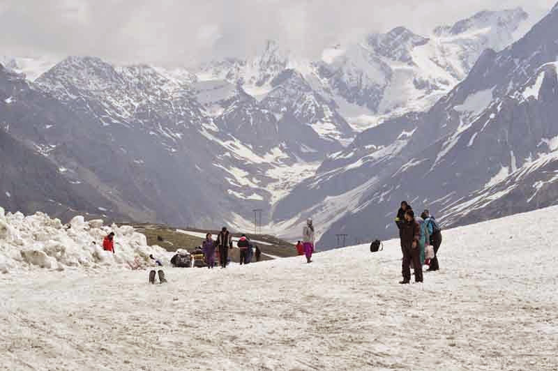
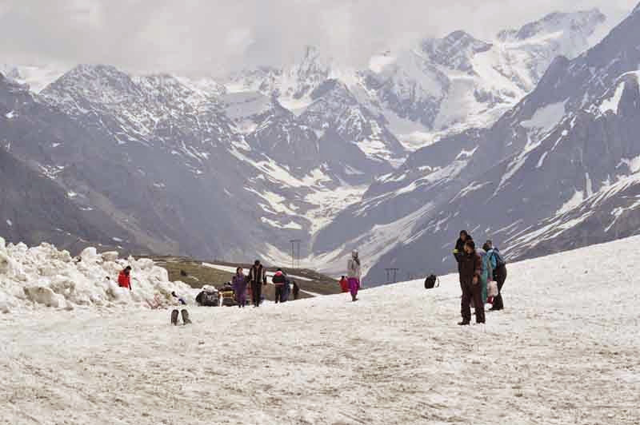
Hadimba Temple

Paragliding in Manali
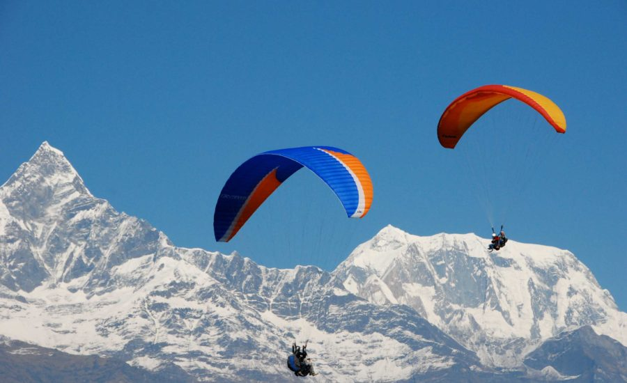
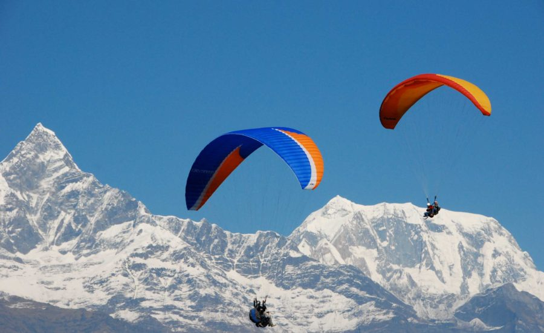
Nightlife in Manali
After reading through the rocky Himalayas all day, Manali oers some of the best ways to enjoy a tranquil nightlife. From the relaxing aromas of Cafes to groovy Bars and Lounges, this beautiful hill station is full of vigour and energy. Dine, party and enjoy away the night time with your friends in exotic stations such as Johnson's bar and restaurant or Zing Zing Bar. If you want to spend some downtime with your partner in low laid Discotheques, The Chelsea club and Buzz are some of the top choices. The local markets and sidewalks are also excellent spots for catching a glimpse of traditional night routines of locals, stargazing around the circuit street parks is also a serenading experience.
Restaurants and Local Food in Manali
Manali is a hill station glittering with amazing restaurants, cafes and bars, that an take care of any need, desires or cravings that its visitors may have. You will nd countless restaurants with a rich variety and some of the most delicious food on their menus. You can nd Italian, Chinese, Korean, Continental, Indian, Japanese, Thai, Vietnamese cuisines here along with the popular Tibetan Momos The cafes with a parallel culture of their own, cater to younger crowds. These cafes serve pizzas, momos, banana pancakes and apple pies throughout the day and you can also try Yak's cheese here. Along with these do relish the street food there with Samosas, Aloo tikki, Bread Pakoras, Paav Bhaji, Gulab Jamun and more lling the streets with colors and fragrances. Other than these, the city has an equally rich platter of local Himachal food.
After reading through the rocky Himalayas all day, Manali oers some of the best ways to enjoy a tranquil nightlife. From the relaxing aromas of Cafes to groovy Bars and Lounges, this beautiful hill station is full of vigour and energy. Dine, party and enjoy away the night time with your friends in exotic stations such as Johnson's bar and restaurant or Zing Zing Bar. If you want to spend some downtime with your partner in low laid Discotheques, The Chelsea club and Buzz are some of the top choices. The local markets and sidewalks are also excellent spots for catching a glimpse of traditional night routines of locals, stargazing around the circuit street parks is also a serenading experience.
Restaurants and Local Food in Manali
Manali is a hill station glittering with amazing restaurants, cafes and bars, that an take care of any need, desires or cravings that its visitors may have. You will nd countless restaurants with a rich variety and some of the most delicious food on their menus. You can nd Italian, Chinese, Korean, Continental, Indian, Japanese, Thai, Vietnamese cuisines here along with the popular Tibetan Momos The cafes with a parallel culture of their own, cater to younger crowds. These cafes serve pizzas, momos, banana pancakes and apple pies throughout the day and you can also try Yak's cheese here. Along with these do relish the street food there with Samosas, Aloo tikki, Bread Pakoras, Paav Bhaji, Gulab Jamun and more lling the streets with colors and fragrances. Other than these, the city has an equally rich platter of local Himachal food.
Nainital Tourism -- "Misty lakes and mountains"
Nainital with its beautiful lakes, temples and exotic scenery around is the perfect honeymoon paradise nestled in the arms of Kumaon Hills with an air which is
refreshing and carries a subtle charm.
Blessed with its own scenic lake, Nainital is a hill station surrounded by the peaks of Kumaon Hills and is full of
natural hot water springs. Nainital is divided into two parts, Tallital and Mallital, with the lake separating them. Tallital is the southern side of the lake, while
Mallital consists of the northern upper reaches. It is also known as the Lake District of Uttarakhand and is named after Goddess Naina Devi. This honeymoon
paradise nestled in the arms of Kumaon Hills is believed to have the blessings of Lord Shiva. Some popular engagements around Nainital are its lake, trekking,
yatching, and horse-riding
Thinks To Do
Naini Lake

Naina Devi Temple
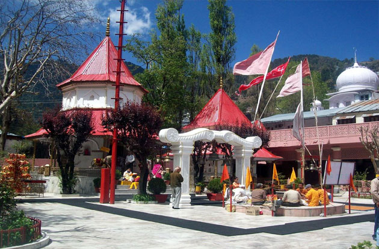
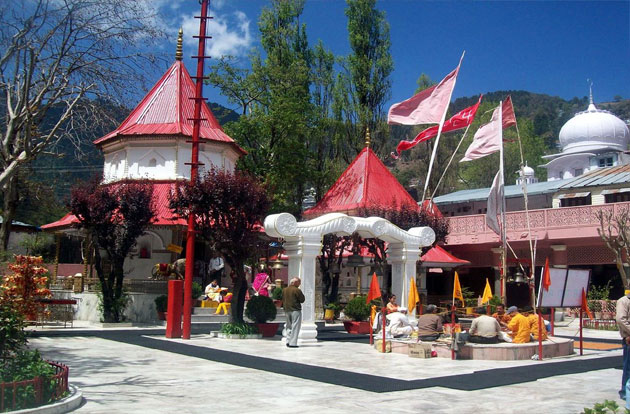
Snow View Point
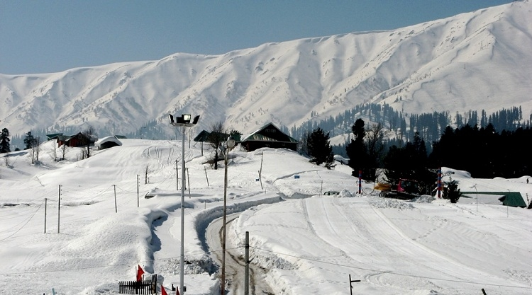
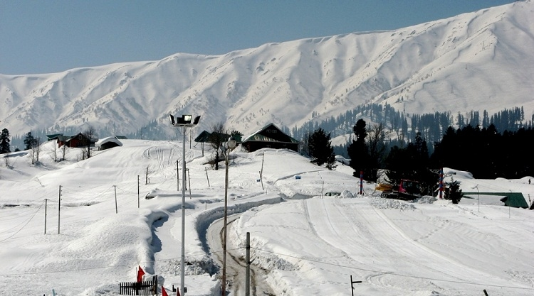
Eco Cave Gardens
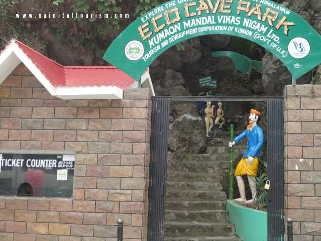
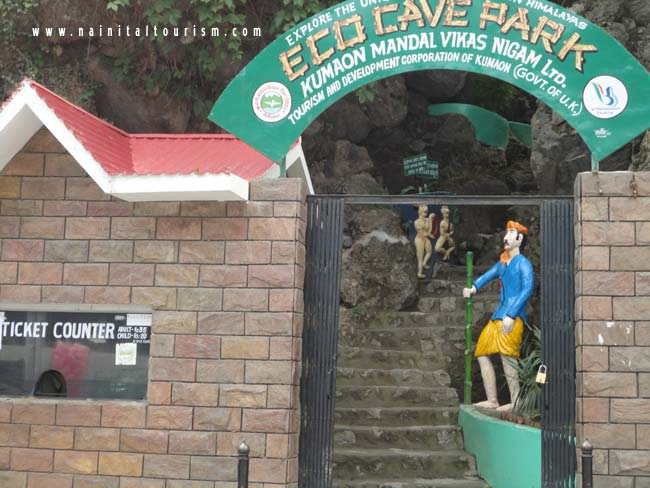
City of Lakes
Known as the 'Lake District of India', Nainital is a tourist attraction for both adventurers and seekers. Famous for its lakes and its picturesque location, Nainital is the perfect summer retreat for those wishing to escape the unbearable summers of north India. Besides being a tourist hotspot, Nainital is also famous for its education, be it St. Joseph's College, or Birla Vidya Mandir, or even the renowned Sherwood College, famous for giving illustrious celebrities like Amitabh Bachchan, Kabir Bedi, Manish Pandey, Majo Nath Sharma, and Field Marshal Sam Manekshaw.
Trekking/Hiking in Nainital
The rocky landscape of Nainital makes it a home for some of the most energised adventure sports among which trekking is a popular choice for travellers. The Lake district of Uttarakhand is at a normal elevation of 1,938 meters which provides trekkers with the best experience of thrilling climb and peace in the midst of green woods. Naina Peak is one of the most preferred treks which oers a six to seven hours of rigorous trekking experience and an achieving height of 2611 meters. The striking foot trail is surrounded by think confers and is a beloved place by birdwatchers. The location is a home for various bird species such as Sunbirds and Himalayan Grion Vultures. One can enjoy the bliss of natural serenity after completing the thrilling climb to Naina peak. Another popular spot is the Tin Top Trek, a short trek with spectacular action and luxurious natural experience. It is a 3-kilometre trail that is often started early morning for the tourists so that they can enjoy the campre on the base at dusk. The SNow View and Camel?s back trekking circuit are other popular options to indulge in the tranquil air of Nainital.
Known as the 'Lake District of India', Nainital is a tourist attraction for both adventurers and seekers. Famous for its lakes and its picturesque location, Nainital is the perfect summer retreat for those wishing to escape the unbearable summers of north India. Besides being a tourist hotspot, Nainital is also famous for its education, be it St. Joseph's College, or Birla Vidya Mandir, or even the renowned Sherwood College, famous for giving illustrious celebrities like Amitabh Bachchan, Kabir Bedi, Manish Pandey, Majo Nath Sharma, and Field Marshal Sam Manekshaw.
Trekking/Hiking in Nainital
The rocky landscape of Nainital makes it a home for some of the most energised adventure sports among which trekking is a popular choice for travellers. The Lake district of Uttarakhand is at a normal elevation of 1,938 meters which provides trekkers with the best experience of thrilling climb and peace in the midst of green woods. Naina Peak is one of the most preferred treks which oers a six to seven hours of rigorous trekking experience and an achieving height of 2611 meters. The striking foot trail is surrounded by think confers and is a beloved place by birdwatchers. The location is a home for various bird species such as Sunbirds and Himalayan Grion Vultures. One can enjoy the bliss of natural serenity after completing the thrilling climb to Naina peak. Another popular spot is the Tin Top Trek, a short trek with spectacular action and luxurious natural experience. It is a 3-kilometre trail that is often started early morning for the tourists so that they can enjoy the campre on the base at dusk. The SNow View and Camel?s back trekking circuit are other popular options to indulge in the tranquil air of Nainital.
Srinagar Tourism -- "The Paradise on Earth"
Sheltered by the snowy White Mountains, Srinagar is the summer capital of Jammu and Kashmir. The heady combination of natural beauty, charming people and
delightful living attracts salivating intrepid tourists from all around the world. The crown of Kashmir valley situated on the banks of Jhelum River oers bliss and
serenity to its travellers. Boating in Dal Lake, spending leisure days in houseboats and devouring into hot and mouth-watering delicacies is an experience that no
place else will serve you better.
With deep and mesmerising valleys cascaded in sky-scraping mountains and evergreen beauty, this heaven on Earth leaves you absolutely mesmerised. Right
from Chashm-E-Shahi to the exotic Shalimar garden, Srinagar oers
bountiful of places to visit. Surrounded by mountains for the adventurous lot to lakes for photoholics to shopping markets for the spendthrifts, Srinagar does
not disappoint anyone.
Thinks To Do
Dal Lake

Mughal Gardens
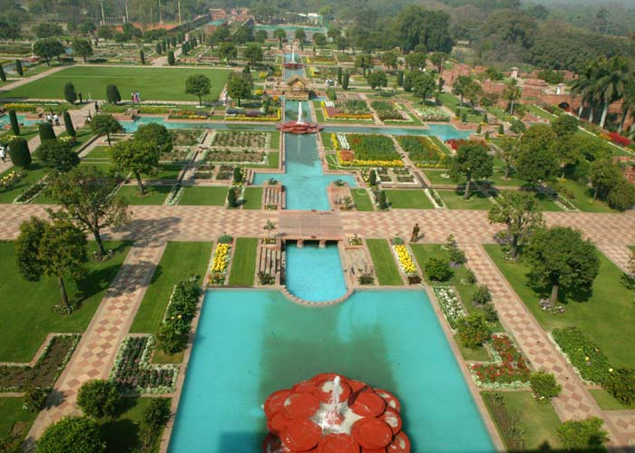
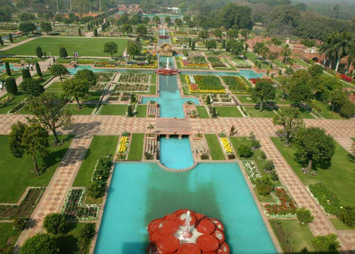
Char Chinnar
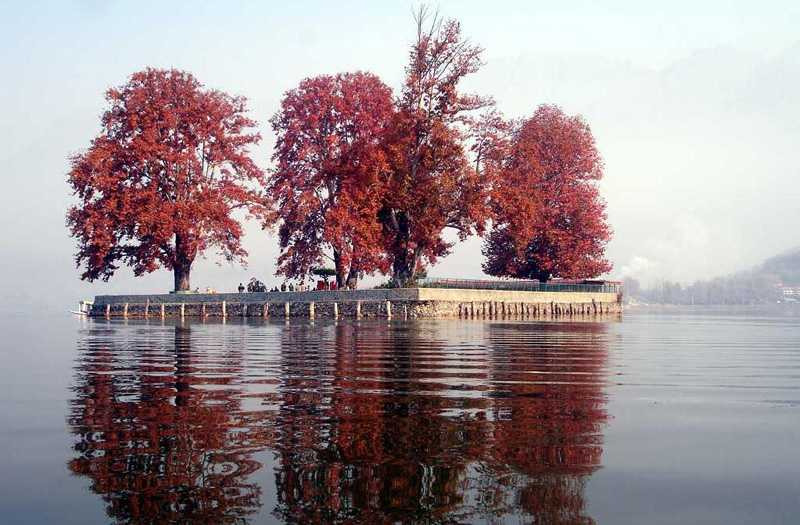
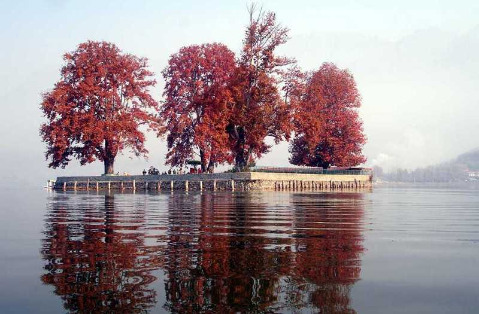
Shikara Ride

History Of Srinagar
The name Srinagar originated from two Sanskrit words ? ?Sri? meaning wealth and ?Nagar? which means city. Prehistoric people used to refer Srinagar as ?Siri ? nagar? which was a local alteration of ?Surya ? nagar? or City of Sun. King Pravarasena II found this city 2000 years ago, formerly named Parvasenpur. Soon it became a part of the Mughal Empire, one of the largest Empires on India at that time. After the disintegration of Mughals, Srinagar was under the control of Durranis who ruled for several decades on the valley. In 1947, the struggle to gain dominance over Srinagar started between India and Pakistan. This led to the beginning of the Indo ? Pak War. United Nations started cease re on the situation due to which some parts of Kashmir went into the territory which is now called ?Azad Kashmir?. The rest of the territory is an integral part of India and tells its story through the glorious beauty of its land to all the travellers.
Culture of Srinagar
Most of the people are lured by the elegant lifestyle of the city, medieval ? looking backstreets and glistering white Himalayan villages. The multiple cultures and rich heritages have emerged from the Indo ? Aryan Civilization from years ago, bearing the cultural aspects of Islam this place which can be seen in their food, traditions and lifestyle. The people are great craftsmen who practice many of the lost art forms in the world. Most of the population constitutes of Hindus and Muslims, as common languages spoken are Koshur, Kashmiri and Hindi. Women wear colourful sweater made dresses and men wear gurgabi. Religion in Srinagar is very diverse, Hinduism, Islam and Buddhism are commonly followed by the people. Muslims are divided into two major groups ? Shyias and Sunnis. These cultural dierences have majorly contributed towards the multicultural lifestyle adopted by the people today
The name Srinagar originated from two Sanskrit words ? ?Sri? meaning wealth and ?Nagar? which means city. Prehistoric people used to refer Srinagar as ?Siri ? nagar? which was a local alteration of ?Surya ? nagar? or City of Sun. King Pravarasena II found this city 2000 years ago, formerly named Parvasenpur. Soon it became a part of the Mughal Empire, one of the largest Empires on India at that time. After the disintegration of Mughals, Srinagar was under the control of Durranis who ruled for several decades on the valley. In 1947, the struggle to gain dominance over Srinagar started between India and Pakistan. This led to the beginning of the Indo ? Pak War. United Nations started cease re on the situation due to which some parts of Kashmir went into the territory which is now called ?Azad Kashmir?. The rest of the territory is an integral part of India and tells its story through the glorious beauty of its land to all the travellers.
Culture of Srinagar
Most of the people are lured by the elegant lifestyle of the city, medieval ? looking backstreets and glistering white Himalayan villages. The multiple cultures and rich heritages have emerged from the Indo ? Aryan Civilization from years ago, bearing the cultural aspects of Islam this place which can be seen in their food, traditions and lifestyle. The people are great craftsmen who practice many of the lost art forms in the world. Most of the population constitutes of Hindus and Muslims, as common languages spoken are Koshur, Kashmiri and Hindi. Women wear colourful sweater made dresses and men wear gurgabi. Religion in Srinagar is very diverse, Hinduism, Islam and Buddhism are commonly followed by the people. Muslims are divided into two major groups ? Shyias and Sunnis. These cultural dierences have majorly contributed towards the multicultural lifestyle adopted by the people today